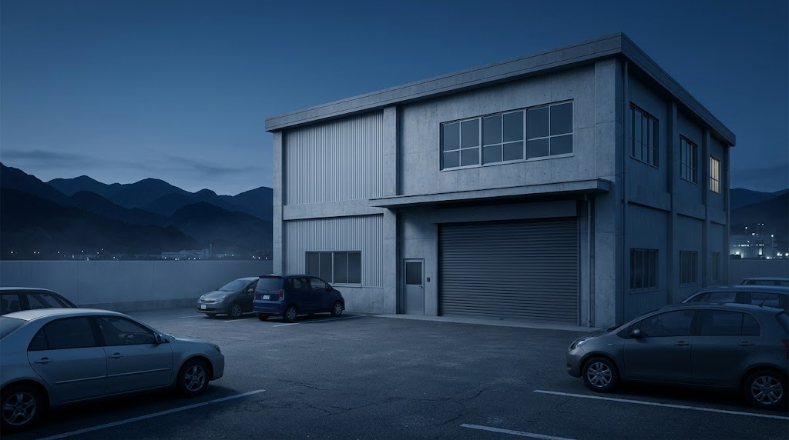

企業概要
生駒山を望む東大阪の地で、精密部品を削り続けています。
01PROFILE
会社概要
| 社名 | 株式会社 生駒精密工業(いこませいみつこうぎょう) |
|---|---|
| 代表者 | 代表取締役 大西 正和 |
| 創業 | 1978年 |
| 設立 | 1986年 |
| 資本金 | 3,000万円 |
| 従業員数 | 52名(2026年4月現在) |
| 事業内容 | 精密部品の切削加工(NC旋盤・マシニングセンタ・5軸加工) 試作1個から量産まで、検査・表面処理の手配を含めて承ります |
| 所在地 | 本社工場:〒577-0000 大阪府東大阪市精工町1-2-3 第2工場:〒577-0000 大阪府東大阪市精工町1-5-8 |
| 電話・FAX | TEL 06-0000-0000 / FAX 06-0000-0001 |
| 営業時間 | 平日 8:30〜17:30(土日祝・夏季・年末年始は休み) |
| 取引銀行 | 〇〇銀行 東大阪支店/〇〇信用金庫 精工町支店 |
| 主な取引先 | 産業機械・半導体製造装置・医療機器・ロボットの各メーカー 社名は、掲載の許可をいただいた企業のみ掲載します。 |
掲載内容はすべて仮置きです。
02HISTORY
沿革
旋盤2台の町工場から、5軸加工と品質保証を備えた精密加工メーカーへ。
- 1978創業東大阪市で「生駒鉄工所」として、NC旋盤2台で操業を始める。
- 1986法人化株式会社 生駒精密工業となる。マシニングセンタを導入。
- 1999本社工場を移転・増築現在の精工町に本社工場を新築し、温度管理された測定室を設ける。
- 20085軸加工機を導入複雑な形状の部品や、半導体製造装置向けの部品に対応。
- 2012ISO 9001 を取得品質マネジメントシステムの認証を取得(仮)。
- 2019第2工場を新設量産ラインを分け、試作と量産を並行して進められる体制に。
- 2024三次元測定機を増設出荷前の検査体制を強化。若手の採用・育成にも力を入れる。
03CERTIFICATION
認証・登録
ISO 9001:2015(品質マネジメントシステム)
精密部品の切削加工について、図面の確認から加工・検査・出荷までの仕組みが、国際規格にもとづいて運用されていることの認証です。
認証の内容は仮置きです。認証マークは見本です。
04ACCESS
アクセス
地図はイメージです(実案件ではGoogleマップを埋め込み)
- 所在地
- 〒577-0000
大阪府東大阪市精工町1-2-3 - 電車
- 精工町駅から東へ徒歩8分
- お車
- 東大阪中央ICから約10分
- 駐車場
- 来客用 5台(本社工場の正面)
- 受付
- 平日 8:30〜17:30。ご来社の際は、事前にご連絡ください。